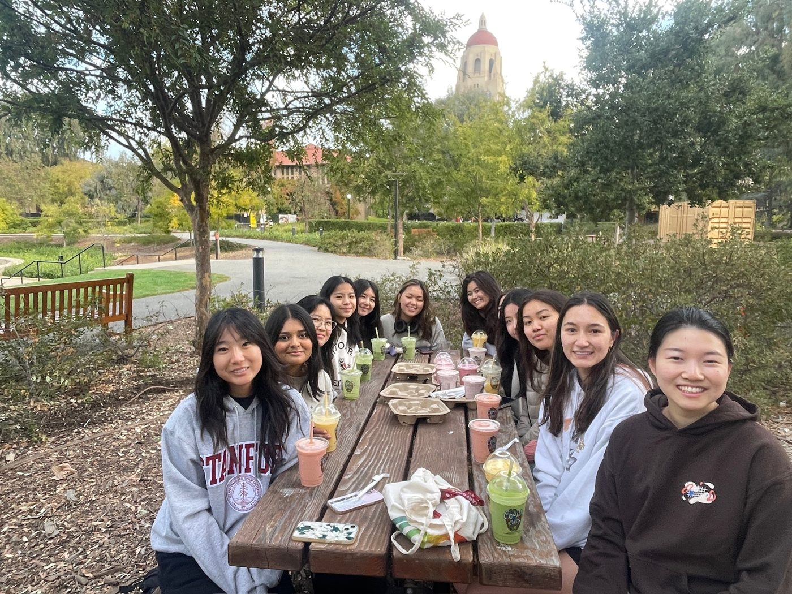
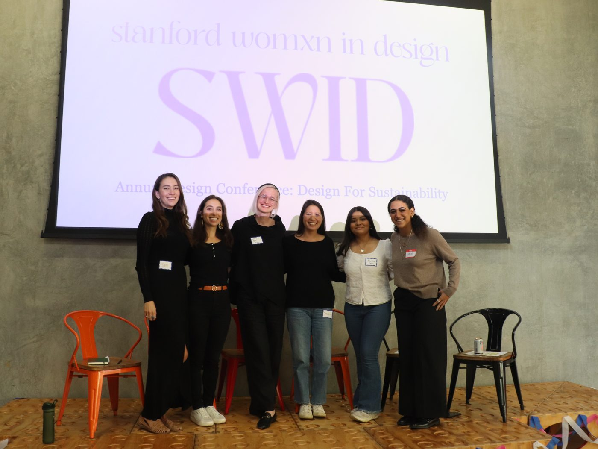

About
Stanford Women in Design is a community for anyone curious about design, whether you’re a design major or someone who’s always wanted to learn. We host workshops, social events, and conferences that help you build skills while meeting passionate, creative people.


What is design?
Design at Stanford is deeply interdisciplinary, ranging from physical products to digital experiences.
But at its core, design is about people. It’s the practice of understanding what others need, then building something that meets those needs and makes their lives a little better.